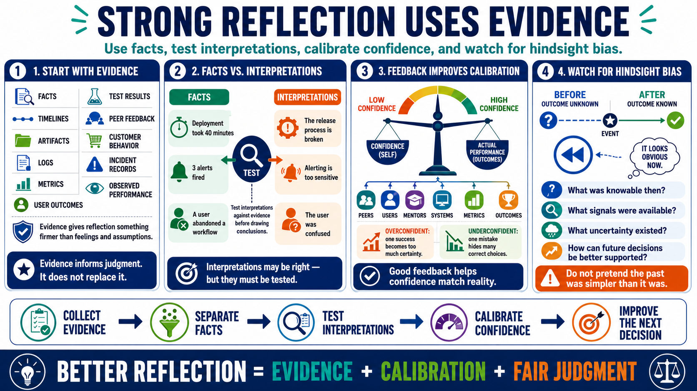

Evidence, Feedback, and Calibration
Connecting to LMS... Progress: in progress

Narration
Strong reflection is grounded in evidence. Evidence can include facts, timelines, artifacts, logs, metrics, user outcomes, test results, peer feedback, customer behavior, incident records, or observed performance. Without evidence, reflection can become a debate between feelings and assumptions. Evidence does not remove judgment, but it gives judgment something firmer to work with.
Separating facts from interpretations is a core reflective skill. A fact might be that a deployment took forty minutes, three alerts fired, or a user abandoned a workflow. An interpretation might be that the release process is broken, the alerting is too sensitive, or the user was confused. Interpretations may be correct, but they should be tested against the evidence before becoming conclusions.
Feedback improves calibration. Calibration means matching confidence to actual performance, accuracy, or likelihood. A person may be overconfident because a past decision worked out, or underconfident because one visible mistake overshadowed many correct choices. Feedback from peers, users, mentors, systems, metrics, and outcomes helps people adjust confidence without overreacting to one event.
Hindsight bias can distort reflection by making outcomes seem more predictable after they happen than they really were before. A decision can look obvious in review even if the evidence at the time was incomplete. Good reflection asks what was knowable then, what signals were available, what uncertainty existed, and how future decisions can be better supported without pretending the past was simpler than it was.